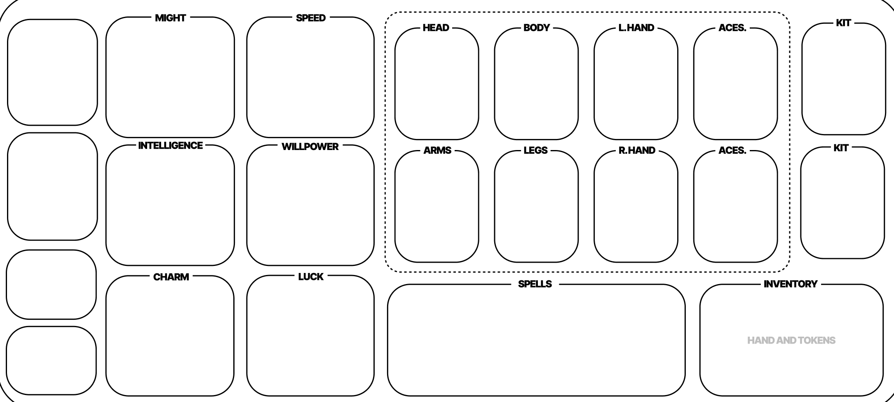

"Success is a choice—failure is a broadcast."
1. Game Setup & Initial Draft
2. Leveling & HP Calibration
When you level up, you gain a new die. Your Max HP increases based on the balancing protocol:
- Standard (D6-D12): Roll the die and add the result to your Max HP.
- D4 Specialist: Roll the D4 twice and add them together.
- D20 Titan: Roll the D20, then halve the result (round up).
3. Stats
Each stat influences specific card types, skill tests, and damage calculations. Stats improve through leveling and card effects.
| Stat | Stat Tag | Primary Use |
|---|---|---|
| Might (M) | Heavy | Melee damage, physical force, heavy weapon proficiency |
| Speed (SP) | Finesse | Ranged damage, evasion, fast-action cards |
| Intelligence (I) | Arcane | Spell damage, problem-solving, Arcane card requirements |
| Willpower (WP) | Sacred | Spiritual power, status resistance, Sacred card requirements |
| Charm (C) | Fancy | Performance, social manipulation, crowd-based abilities |
| Luck (L) | Risky | Chance effects, Luck Clutch bonus, Risky card synergies |
Supernatural Tag: Some cards carry the Supernatural tag, requiring +3 in both Intelligence and Willpower to equip or activate.
See the Keyword Ability Glossary for full Stat Tag and Dice Affinity rules.
4. Card Types & Limits
Cards fall into distinct types, each with its own equip slot rules and limits. You can only benefit from a card if you meet its requirements and have an open slot.
| Card Type | Slot Limit | Notes |
|---|---|---|
| Head | 1 | Helmets, masks, headgear |
| Body | 1 | Armor, coats, chest pieces |
| Arms | 1 | Bracers, gauntlets, sleeves |
| Legs | 1 | Boots, greaves, lower gear |
| Hands | 2 | Weapons, shields, held items — one per hand |
| Accessory | 2 | Rings, charms, off-slot items |
| Spell | Unlimited | Active magic abilities; require dice to cast |
| Enhancement | Unlimited | Passive upgrades; apply automatically when equipped |
| Kit | 2 Max | Multi-function utility sets; each Kit counts as one slot |
Hand Size
Your Hand Size determines how many cards you can hold at once outside of your equipped slots.
Higher Might builds naturally carry more options into a Challenge. Cards beyond your Hand Size must be discarded or sold.
5. The Skill Test Steps
Use the Nudge Protocol for any Skill Test (Shout Outs, Treasure, etc.):
- Identify Threshold: Success is the Halfway Point of the die used (e.g., 4+ on a D6).
- Roll & Nudge: Roll your active die. Add or subtract your relevant Attribute Points.
- Luck Clutch: Once per challenge, you may add your Luck Stat to the Nudge total.
- Resolution: If successful, resolve the effect. Exhaust the die regardless of outcome.
6. Combat & Action Economy
- Critical Hit (Natural Max): Deal x2 Total Damage.
- Fumble (Natural 1): Auto-fail and suffer 1 Recoil Damage.
- Gold Rewards: Earn 1 Gold per 1 Damage dealt (after Block). Earn 1 Gold per 2 Damage received (Round down).
7. Dice Pool Management
Each player manages two personal die pools throughout a Challenge.
| Pool | Status | Contents |
|---|---|---|
| Inactivated | Ready to use | All dice begin here at the start of each Challenge |
| Exhausted | Spent this Challenge | Dice move here after being rolled or spent on card effects |
Refreshing Your Dice
At the start of your turn, if your Inactivated Pool is empty:
- Take 1 Damage (cannot be blocked or reduced).
- Move all dice from your Exhausted Pool back to your Inactivated Pool.
This Refresh cost is intentional — pushing past your limits has a price. Managing when to Refresh versus when to Recall is a key strategic decision.
8. The Challenge Phase
Challenges end under the following conditions:
- Completion (Success): The Monster/Objective is defeated or all secondary requirements are met within the time limit.
- Termination (Failure): The party fails to meet Challenge requirements or a TPK occurs.
- Recall: Any player may Recall as a free action on their turn. Recalling removes that player from the active arena — they return to the Green Room with their current HP and dice intact, preserving their resources but abandoning their teammates for the remainder of the Challenge. A Recalled player earns no Gold or rewards from that Challenge's outcome.
9. The Green Room & Resting Roll
The Green Room is your safe zone between Challenges. No monsters, no time pressure — players freely equip cards, discuss strategy, and spend Gold here. The party decides when to leave.
Green Room Phase Order
- Resting Roll (optional, per player)
- Reward Draft (if a Challenge was just completed)
- Purchase & Equip Cards
- Party Discussion & Ready Check
- Enter Next Challenge
Resting Roll
Each player individually decides whether to rest. This is a personal choice — not a party vote.
- Choose 1 die from your personal dice pool.
- Roll the die. Heal HP equal to the result.
- HP cannot exceed your Max HP.
- Rolling for a Resting Roll does NOT exhaust the die — it is still available for the upcoming Challenge.
The Resting Roll is free. The only risk is rolling low and healing less than expected. Higher dice offer bigger potential healing but no guarantee.
| Die Choice | Min Heal | Max Heal | Strategy |
|---|---|---|---|
| D4 | 1 | 4 | Safe — low ceiling but consistent |
| D6 / D8 | 1 | 6–8 | Balanced risk/reward |
| D12 | 1 | 12 | Higher upside, moderate gamble |
| D20 | 1 | 20 | High risk — could recover big or barely heal |
10. Treasure Roll Rules
Treasure cards represent face-down high-value corporate loot.
- Attempting the Claim: Spend an Active Die and declare a stat to use for the test: Speed, Intelligence, or Luck.
- The Roll: Perform the Skill Tests in the order presented on the Treasure Card.
- Success: If all tests pass, the reward is granted and the card is shuffled back into the Treasure Deck. Exhaust the die.
- Failure: The die is exhausted, but the Treasure remains face-up in the arena, allowing for future attempts.
11. Token & Minion Protocol
Tokens are summoned assets that follow the Life-Link system.
- Deployment: Summon a Token by paying its listed Gold cost and spending 1 Active Die.
- Bodyguard: Tokens can intercept damage. Their Block applies before their HP is reduced.
- Healing: Players may sacrifice their own HP to heal a Token at a 1-for-1 ratio as a free action.
12. Floor Progression & Win Condition
The game is structured across 3 Floors, each containing 6 Challenges followed by a Floor Boss. Completing a Challenge grants a Reward Phase. Defeating the Final Boss on Floor 3 wins the game.
Floor 1
- Start with 1 Die
- Challenges 1–3 → Level Up (gain 2nd die)
- Challenges 4–6 → Floor Boss
- Defeat Boss → Level Up (gain 3rd die)
Floor 2
- Start with 3 Dice
- Challenges 1–3 → Level Up (gain 4th die)
- Challenges 4–6 → Floor Boss
- Defeat Boss → Level Up (gain 5th die)
Floor 3 — Final Run
- Start with 5 Dice
- Challenges 1–3 → Level Up (gain 6th die, MAX)
- Challenges 4–6 → Final Boss
- Defeat Final Boss → Victory
13. Board Layout — Player Area
Each player uses a personal Player Area mat to track their stats, equipped cards, and held cards. The mat is divided into three zones.
Stat Zone (Left Column)
Six stat tracks run vertically down the left side of the mat, each with a die slot for tracking current point values: Might, Speed, Intelligence, Willpower, Charm, and Luck.
Equipment Zone (Center — Dashed Border)
The bordered center section contains all physical equipment slots arranged across two rows:
| Row | Slots |
|---|---|
| Top Row | Head, Body, L. Hand, Accessory |
| Bottom Row | Arms, Legs, R. Hand, Accessory |
Only cards with matching Equipment types may be placed in these slots. The dashed border visually distinguishes equipped cards from held cards.
Card Zones (Right Side)
| Zone | Contents |
|---|---|
| Kit Slots (×2) | One slot per Kit, stacked vertically on the far right |
| Spells | Wide horizontal slot for all currently equipped Spell cards |
| Inventory (Hand & Tokens) | Holding area for unequipped hand cards and personal Token cards |
14. Board Layout — Game Board
The shared Game Board contains all communal zones used during play. It is divided into four horizontal areas.

Game Decks (Top Row)
All shuffled decks are placed along the top: Reward (×3 draw piles), Reward Discard, Challenge, Monster, Treasure, Environment, Tokens, and Status.
Play Area (Center)
| Zone | Description |
|---|---|
| Green Room | Left-side safe zone. Player tokens rest here between Challenges. No threats may enter this zone. |
| Challenge Arena | The active combat space. Contains two sub-zones: Players/Player Tokens (left half) and Monsters/Asset Tokens (right half). |
| Environment Track | Vertical track on the right edge of the Arena. Tracks the active Environment card's escalating effects. |
| Initiative Tracker | Vertical track alongside the Environment. Determines turn order within the Challenge. |
Floor Tracker (Bottom Row)
Tracks progress through the current Floor. Slots run left to right in the following order:
The Mode tracker (E / M / H) and Floor tracker (1 / 2 / 3) are located in the bottom-left corner.
Token Bank (Far Right Column)
Three reserve pools are stacked vertically on the right edge of the board: Dice Bank (spare dice for new players or replacements), HP Tokens, and Gold Tokens.
Defeat & Death
If you hit 0 HP, you reappear in the Green Room with 1 HP and All Dice Exhausted.
Game Over: Fail 3 challenges in a row, lose to a Floor Boss, or a TPK.